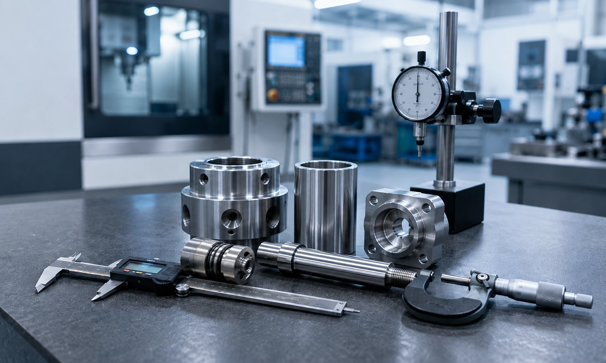
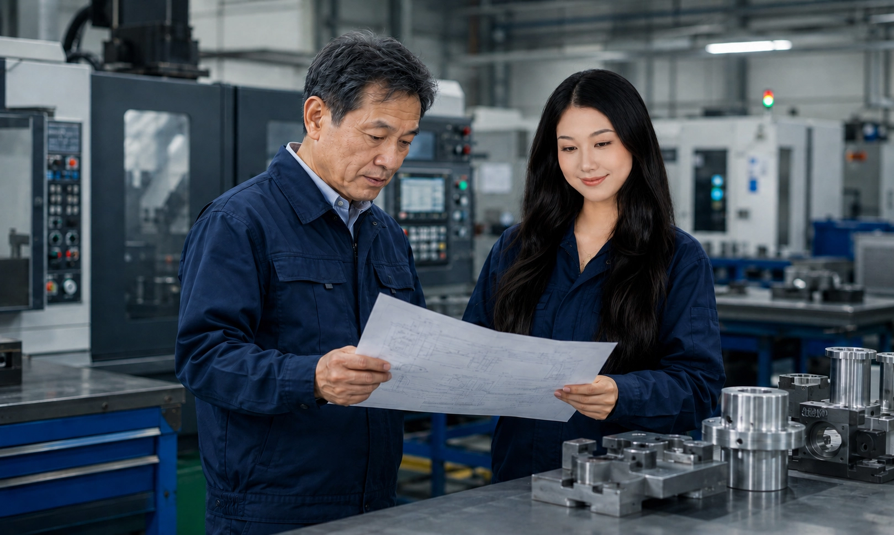
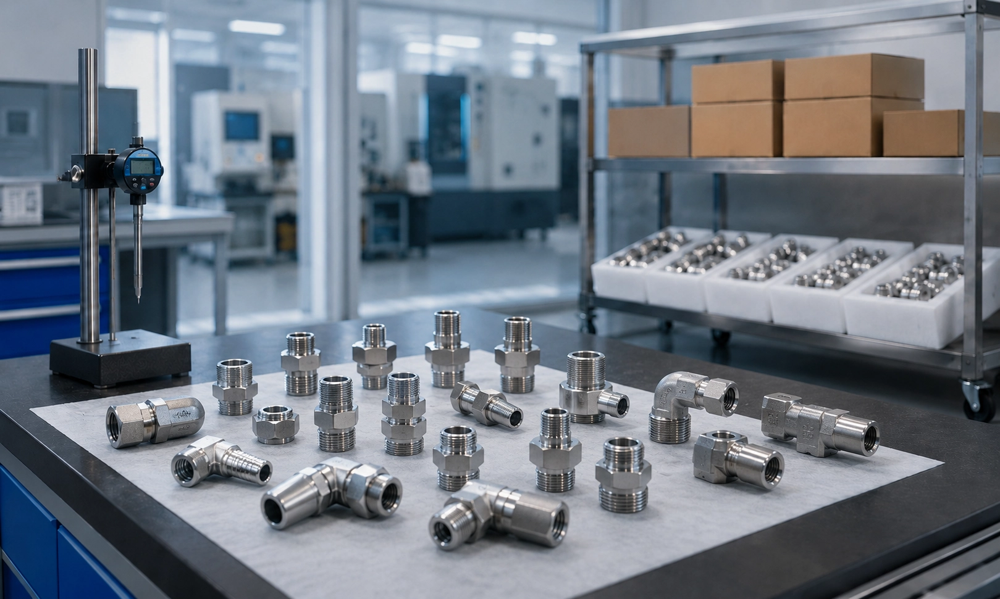
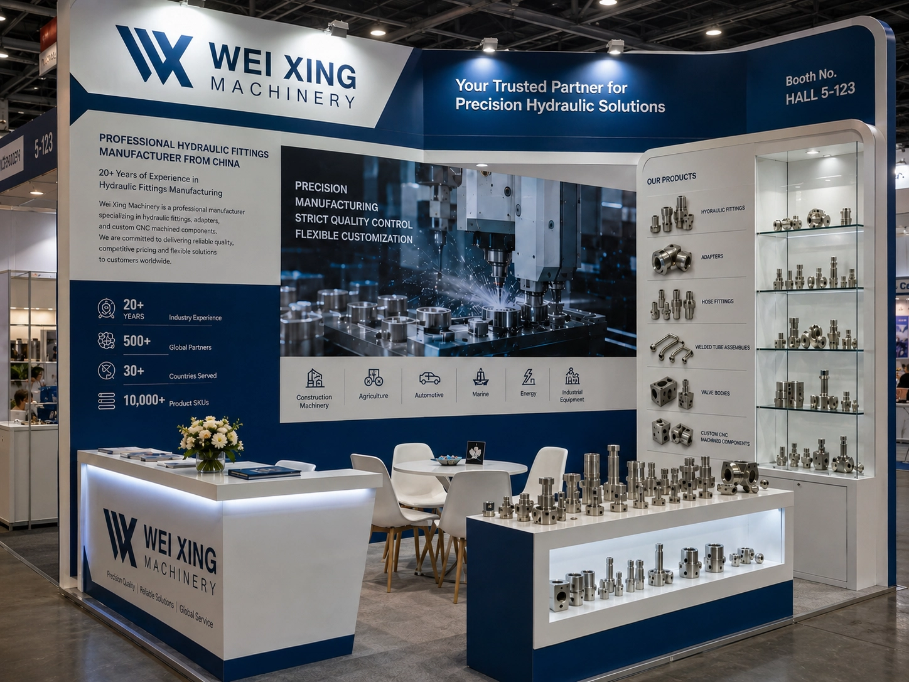
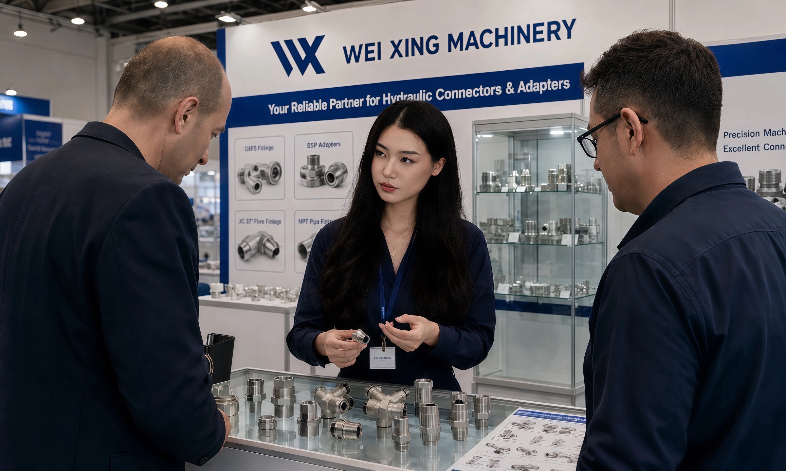
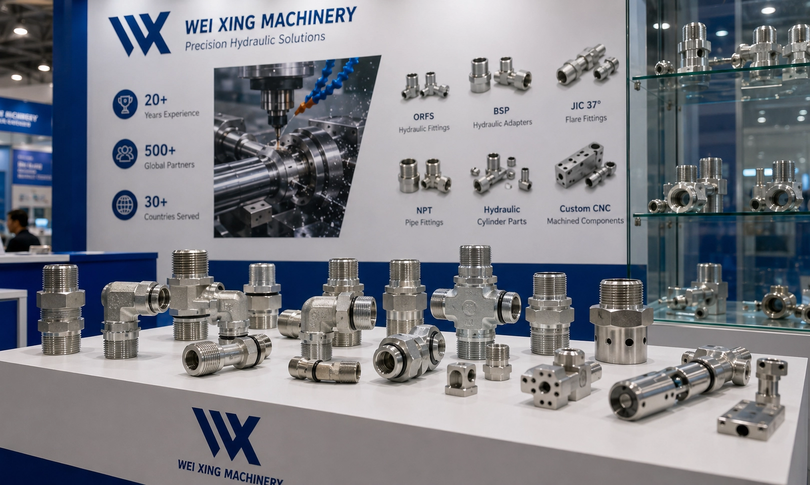
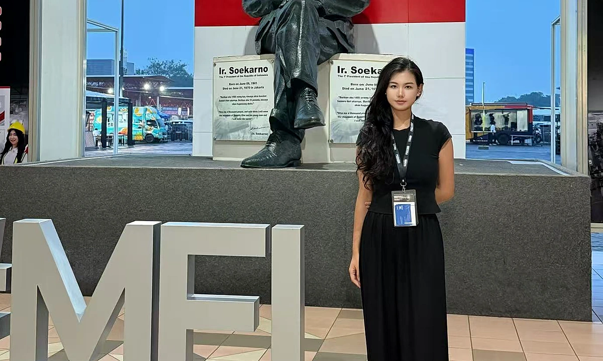
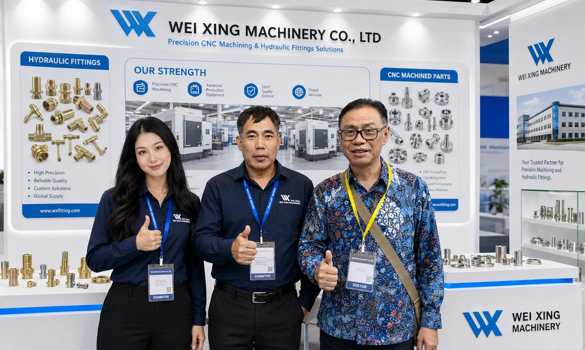
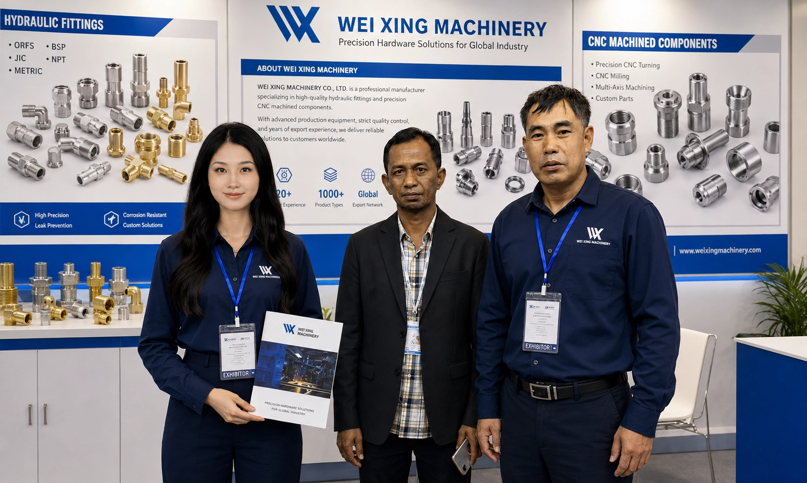

余姚市威兴机械有限公司是一家专注于液压接头、液压过渡接头、焊接管路总成、液压阀块、阀类零部件、液压缸零部件及定制 CNC 加工件的精密制造企业。我们为液压设备、工业机械和 OEM 客户提供来图、来样及应用需求定制支持。
凭借稳定的加工能力、严格的质量控制和灵活的定制服务，我们持续为工程机械、农业机械、汽车、船舶、能源及工业设备领域客户提供可靠的液压连接解决方案。多年来，我们的产品已服务于东亚、欧洲及北美多个国家和地区的企业，赢得了客户的长期信赖。
我们始终坚持以质量为核心，以客户需求为导向，为全球客户提供高精度、高稳定性和高性价比的液压管件产品。

用于液压软管和管路连接的精密接头，帮助设备实现可靠密封与稳定装配。
根据不同端口、管路和软管接口要求制造螺纹转接件与过渡连接件。
按照图纸、走向尺寸和应用要求定制焊接管件与管路总成。
根据液压回路图加工油口、阀腔和内部油路，满足集成化液压系统需求。
生产阀体及相关壳体零件，重点控制密封面、油口和内部结构加工质量。
为液压控制和油缸应用加工阀芯、活塞及精密车削零件，关注尺寸稳定性。
可按图纸制造导向套、端盖、衬套及其他液压缸相关加工零件。
为机械设备、液压系统和 OEM 装配项目提供非标 CNC 车削与铣削零件。
我们支持根据 2D 图纸、3D 模型、实物样品、螺纹与接口要求、材料选择和表面处理要求进行 OEM 定制制造。可根据项目需求安排小批量试制和重复生产。
常见可加工材料包括碳钢、不锈钢、合金钢、铝和黄铜。制造及配套工艺包括 CNC 车削、CNC 铣削、钻孔、攻丝、镗孔、螺纹加工、焊接协作和表面处理协作。
表面处理可根据图纸和项目要求安排，包括镀锌、锌镍、发黑、磷化、钝化和抛光等常用工业表面处理方式。

每个零部件都按精确规格制造。我们持续投入最先进的CNC技术，确保每批次产品的质量一致性。

我们不只是销售零部件——我们建立合作关系。工程团队与客户紧密协作，共同解决技术难题、优化设计方案。

承诺的交期，我们一定兑现。我们注重确认需求、稳定加工和订单跟进，帮助客户降低沟通成本。
我们通过国际展会与全球客户建立联系，展示威兴机械的精密制造能力和液压零部件解决方案。






在余姚创办小型加工车间，专注国内市场液压接头生产。
拓展国际市场，首批产品出口东南亚和中东地区。
迁入2000余平方米新厂区，扩充CNC加工产能。
服务覆盖30+国家，在欧洲、美洲和大洋洲建立稳定合作关系。
上线全新中英文双语网站和数字产品目录，更好服务全球客户。
威兴机械主要生产液压接头、液压过渡接头、焊接管路总成、液压阀块、液压阀体、阀芯、活塞、液压缸零部件及定制 CNC 加工件。
支持。我们可根据客户提供的 2D 图纸、3D 模型和技术要求进行来图加工。
可以。我们可对实物样品的尺寸、螺纹、材料、表面状态和应用要求进行评估后，再进行生产方案确认。
常见可加工材料包括碳钢、不锈钢、合金钢、铝和黄铜，具体以图纸和项目要求为准。
支持。我们可根据图纸、样品或确认的应用要求加工定制螺纹和液压接口。
生产前建议提供图纸或样品、材料要求、螺纹与接口信息、表面处理要求、数量、应用说明以及检验要求等资料。